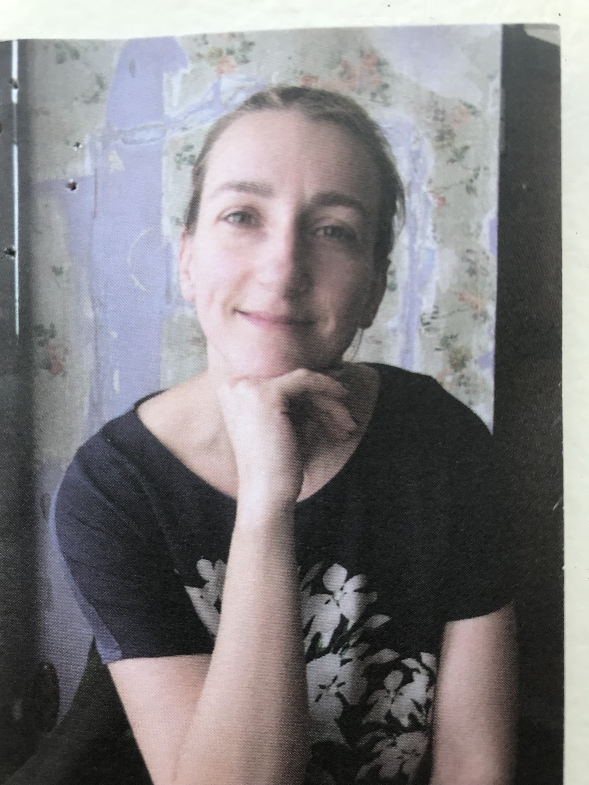

I’m an experienced project manager based in Lisbon, Portugal.
However, since I found my new passion in software development, it
has been the best journey for me.
I’m inquisitive by nature and absolutely love learning new skills.
I also enjoy volunteering and helping my community.
Outside of work I enjoy travel, practice body balance, read
novels, and spend time with my family.
